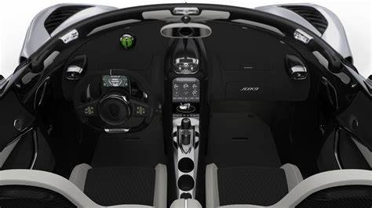

Named for Jesko von Koenigsegg, the father of company founder Christian von Koenigsegg, the Jesko gets a reworked version of the Agera RS' 5.0-liter twin-turbo V-8. It makes 1,280 hp and 1,106 lb-ft of torque if you run it on gasoline, but if you switch to E85, that power figure jumps to a Bugatti Chiron-beating 1,600 hp. In addition to other improvements such as a new crankshaft and intake, Koenigsegg also added larger turbochargers. In order to preserve throttle response, it then added a system that shoots air into the turbo to spool it up more quickly.
For the quickest shift times, you'd think Koenigsegg would pair the Jesko's engine with a dual-clutch transmission. You would also be wrong. Koenigsegg actually developed a nine-speed transmission in-house that uses seven clutches. In addition to being significantly lighter than most DCTs and able to handle more than 1,000 lb-ft of torque, this innovative seven-clutch transmission can also shift to any gear, not just the next one the programming has pre-selected.
And while the Jesko looks a lot like an Agera RS with a crazy wing and a different aerodynamics package, Koenigsegg says it's actually built on a brand new carbon-fiber monocoque chassis that's longer and taller than before. That translates to a more spacious, comfortable cabin while preserving chassis rigidity. The entire suspension has also been improved, offering a new rear-wheel-steering system and upgraded dampers. The optional carbon-fiber wheels are surprisingly light, too, weighing in at 13 pounds in the front and a little more than 16 pounds in the rear. Oh, and that aero kit? It provides more than 2,200 pounds of downforce at 171 mph.

The Jesko also gets the hydraulic-powered doors and hoods that Koenigsegg introduced on the Regera. That means they can be opened and closed remotely using the key fob, not just locked and unlocked. And even though the Jesko was designed for ultimate track performance, it's still street-legal and comes with a surprising number of creature comforts. That includes multiple USB ports, automatic climate control, a surround-view camera system, and a 9.0-inch touchscreen infotainment system. According to Koenigsegg, the Jesko is just as much a grand tourer as it is a track car.